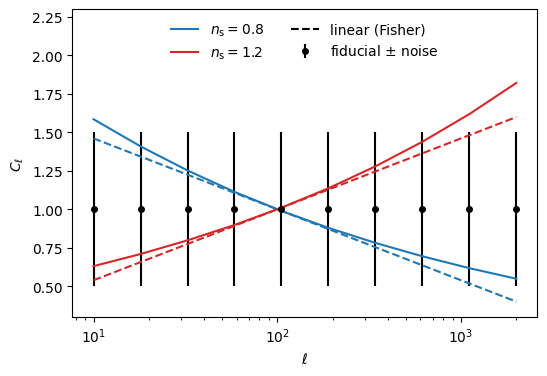
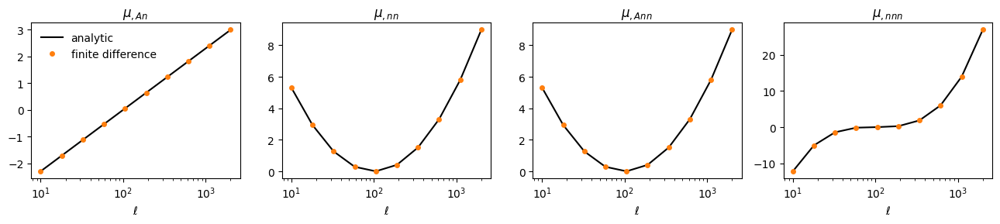
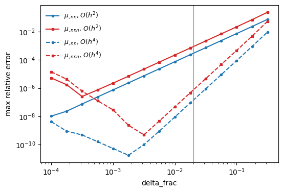
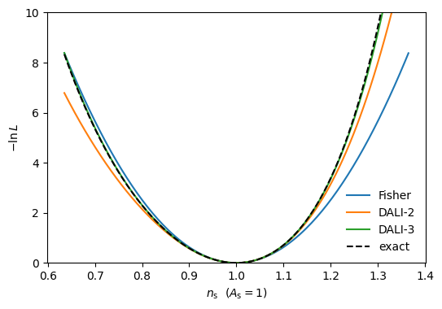
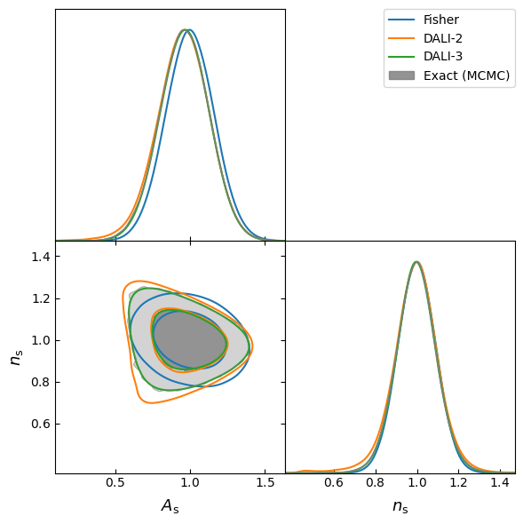
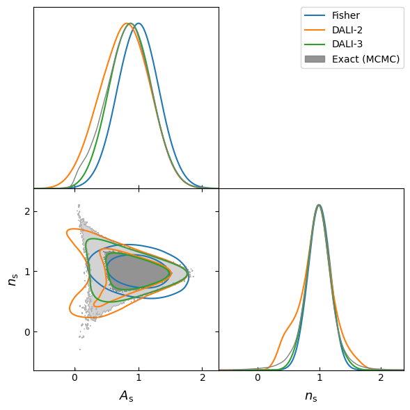

Beyond Fisher: DALI Forecasts with psiphy
A Fisher forecast treats the mean data vector as linear in the parameters over the width of the posterior, so the forecast posterior is always a Gaussian ellipse. When the data respond non-linearly, the true posterior is skewed or curved, and the Fisher ellipse can be misplaced, too small or too large.
DALI (Derivative Approximation for LIkelihoods, Sellentin, Quartin & Amendola 2014) keeps higher-order derivatives of the mean in the Taylor expansion. With \(\Delta = \theta - \theta_{\rm fid}\),
Keeping only the first term gives the Fisher matrix. Up to the second term is the doublet (DALI-2), and up to the third is the triplet (DALI-3). Because \(-\ln L\) is a squared norm, every truncation stays normalisable, which a direct Taylor expansion of \(\ln L\) would not.
psiphy.forecasting.FisherMatrixDALI extends FisherMatrix. The workflow is the Fisher tutorial plus one step:
Estimate the covariance and the first derivatives, and compute the Fisher matrix, as before
Estimate the higher-order derivatives with
estimate_dali_derivativesSample the DALI posterior with
sampleorto_getdist
We compare the result with the exact posterior of a toy model.
[1]:
import numpy as np
import matplotlib.pyplot as plt
import getdist.chains
from getdist import MCSamples, plots
from psiphy.forecasting import FisherMatrixDALI
from psiphy.mcmc import MHSampler
from psiphy.toy_models import PowerLawSpectrum
np.random.seed(42)
getdist.chains.print_load_details = False # quieter getdist
1. A non-linear toy simulator
PowerLawSpectrum models band powers of a power-law spectrum,
The band powers are linear in \(A_{\rm s}\) but exponential in \(n_{\rm s}\). Over the 2.3 decades in \(\ell\), a change \(\delta n_{\rm s}\) rescales the band powers by \(\exp[\delta n_{\rm s} \ln(\ell/\ell_{\rm pivot})]\). That factor is far from linear when the noise lets \(n_{\rm s}\) wander by a few tenths. We use 10 band powers with Gaussian noise of standard deviation 0.5.
As in the Fisher tutorial, the simulator takes (theta, initial_seed, noise_seed). A given pair of seeds gives the same noise realisation at every theta, and noise_seed=0 is noiseless.
[2]:
model = PowerLawSpectrum(ells=np.geomspace(10, 2000, 10), noise_sigma=0.5)
def mean_spectrum(theta):
'''Mean band powers; theta has shape (2,) or (n, 2).'''
A_s, n_s = np.moveaxis(np.asarray(theta, dtype=float), -1, 0)
return np.asarray(A_s)[..., None] * (model.ells / model.ell_pivot) ** (np.asarray(n_s)[..., None] - 1)
def make_simulator(noise):
def simulator(theta, initial_seed, noise_seed):
x = mean_spectrum(theta)
if noise_seed:
x = x + np.random.default_rng(1000 * initial_seed + noise_seed).normal(0, noise, x.size)
return x
return simulator
simulator = make_simulator(model.noise_sigma)
theta_fid = np.array([1.0, 1.0])
param_names = model.param_names
label_names = {'A_s': r'A_{\rm s}', 'n_s': r'n_{\rm s}'}
The plot shows the spectrum at \(n_{\rm s} = 1 \pm 0.2\) (about \(2\sigma\) in the Fisher forecast below). The dashed lines are the linear extrapolation that the Fisher matrix assumes. At high \(\ell\) the true response bends away from it.
[3]:
ells = model.ells
dmu_dns = mean_spectrum(theta_fid) * np.log(ells / model.ell_pivot)
fig, ax = plt.subplots(figsize=(6, 4))
ax.errorbar(ells, mean_spectrum(theta_fid), yerr=model.noise_sigma, fmt='ko', ms=4,
label=r'fiducial $\pm$ noise')
for dn, c in [(-0.2, 'C0'), (0.2, 'C3')]:
ax.plot(ells, mean_spectrum([1.0, 1.0 + dn]), c=c, label=rf'$n_{{\rm s}} = {1 + dn:.1f}$')
ax.plot(ells, mean_spectrum(theta_fid) + dn * dmu_dns, c=c, ls='--')
ax.plot([], [], 'k--', label='linear (Fisher)')
ax.set_xscale('log')
ax.set_xlabel(r'$\ell$')
ax.set_ylabel(r'$C_\ell$')
ax.set_ylim(0.3, 2.3)
ax.legend(frameon=False, loc='upper center', ncol=2)
plt.show()

2. Covariance, first derivatives and Fisher matrix
These steps are inherited from FisherMatrix and work exactly as in the Fisher tutorial.
[4]:
fm = FisherMatrixDALI(simulator, theta_fid, param_names, verbose=True)
fm.estimate_covariance(seeds=range(1, 51), noise_seeds=range(1, 11))
fm.estimate_derivatives(delta_frac=0.01, seeds=[1], noise_seed=0)
fm.compute();
==================================================
Estimating covariance matrix
==================================================
Total realisations: 500, data points: 10
Hartlap factor: 0.978
Condition number: 1.66e+00
==================================================
==================================================
Computing derivatives (2-point stencil)
==================================================
A_s: |dmu/dtheta| = 3.1623
n_s: |dmu/dtheta| = 5.4588
==================================================
==================================================
Fisher Matrix Results [standard]
==================================================
[[ 39.86986517 14.98228565]
[ 14.98228565 125.74631052]]
--- 1D marginal errors ---
A_s: 0.1620 (16.2%)
n_s: 0.0912 (9.1%)
--- 2D marginal errors ---
(A_s, n_s): sigma_A_s=0.1620, sigma_n_s=0.0912
--- Conditional errors (others fixed) ---
A_s: 0.1584 (15.8%)
n_s: 0.0892 (8.9%)
--- Correlations ---
corr(A_s, n_s): -0.212
==================================================
3. Higher-order derivatives
estimate_dali_derivatives(order=...) estimates \(\mu_{,ab}\) (order=2), or both \(\mu_{,ab}\) and \(\mu_{,abc}\) (order=3), with central finite differences. Each partial derivative is a product of 1D central stencils, one for each distinct parameter. For example, at accuracy=2,
accuracy sets the truncation error \(O(h^{\rm accuracy})\); higher accuracy needs more stencil points. The method reports how many new simulations it needs before running them. Points shared with estimate_derivatives (same step) or with the covariance runs come from the cache.
We use noiseless derivatives (noise_seed=0). Two seeds are the minimum for the noise check in section 5.
[5]:
fm.estimate_dali_derivatives(order=3, delta_frac=0.02, seeds=[1, 2], noise_seed=0);
==================================================
Computing DALI derivatives (order 3, O(h^2) stencils)
13 stencil points x 2 seeds x 1 noise seeds: 26 new simulations
==================================================
d(A_s)(A_s): |d^2mu| = 0.0000
d(A_s)(n_s): |d^2mu| = 5.4603
d(n_s)(n_s): |d^2mu| = 12.8839
d(A_s)(A_s)(A_s): |d^3mu| = 0.0000
d(A_s)(A_s)(n_s): |d^3mu| = 0.0000
d(A_s)(n_s)(n_s): |d^3mu| = 12.8839
d(n_s)(n_s)(n_s): |d^3mu| = 33.6914
==================================================
For this model the derivatives are known analytically. With \(P = (\ell/\ell_{\rm pivot})^{n_{\rm s}-1}\) and \(L = \ln(\ell/\ell_{\rm pivot})\), the non-zero ones are \(\mu_{,A n} = PL\), \(\mu_{,nn} = A P L^2\), \(\mu_{,Ann} = PL^2\) and \(\mu_{,nnn} = A P L^3\).
[6]:
A, n = theta_fid
P, L = (ells / model.ell_pivot) ** (n - 1), np.log(ells / model.ell_pivot)
analytic = {
r'$\mu_{,A n}$': (fm.d2mu_dtheta[0, 1], P * L),
r'$\mu_{,nn}$': (fm.d2mu_dtheta[1, 1], A * P * L**2),
r'$\mu_{,Ann}$': (fm.d3mu_dtheta[0, 1, 1], P * L**2),
r'$\mu_{,nnn}$': (fm.d3mu_dtheta[1, 1, 1], A * P * L**3),
}
fig, axes = plt.subplots(1, 4, figsize=(13, 3))
for ax, (name, (num, ana)) in zip(axes, analytic.items()):
ax.plot(ells, ana, 'k-', label='analytic')
ax.plot(ells, num, 'C1o', ms=4, label='finite difference')
ax.set_xscale('log')
ax.set_xlabel(r'$\ell$')
ax.set_title(name)
axes[0].legend(frameon=False)
plt.tight_layout()
plt.show()
for name, (num, ana) in analytic.items():
print(f"{name:16s} max relative error: {np.max(np.abs(num - ana)) / np.max(np.abs(ana)):.1e}")
print("mu_,AA, mu_,AAA, mu_,AAn (zero):", np.abs(fm.d2mu_dtheta[0, 0]).max(),
np.abs(fm.d3mu_dtheta[0, 0, 0]).max(), np.abs(fm.d3mu_dtheta[0, 0, 1]).max())

$\mu_{,A n}$ max relative error: 6.0e-04
$\mu_{,nn}$ max relative error: 3.0e-04
$\mu_{,Ann}$ max relative error: 3.0e-04
$\mu_{,nnn}$ max relative error: 9.0e-04
mu_,AA, mu_,AAA, mu_,AAn (zero): 0.0 0.0 1.3877787807814455e-11
Invalid stencils
The order and accuracy are checked, and every stencil is built, before any simulation runs. accuracy must be even, because central differences cancel the odd error terms.
[7]:
for kwargs in [dict(order=2, accuracy=3), dict(order=4)]:
try:
fm.estimate_dali_derivatives(**kwargs)
except ValueError as err:
print(f"{kwargs}: ValueError: {err}")
{'order': 2, 'accuracy': 3}: ValueError: accuracy must be an even integer >= 2 (central differences), got 3.
{'order': 4}: ValueError: order must be 2 (doublet) or 3 (triplet), got 4.
4. Choosing the step size
Truncation error falls as \(h^{\rm accuracy}\). Rounding error grows as \(\epsilon/h^k\) for a \(k\)-th derivative, and simulation noise grows the same way. The best step is therefore larger than for first derivatives, and larger still for third derivatives. We sweep delta_frac and compare with the analytic derivatives.
[8]:
fm.verbose = False
delta_fracs = np.logspace(-4, -0.5, 15)
errors = {acc: {'nn': [], 'nnn': []} for acc in (2, 4)}
for acc in (2, 4):
for df in delta_fracs:
fm.estimate_dali_derivatives(order=3, delta_frac=df, seeds=[1, 2], noise_seed=0, accuracy=acc)
errors[acc]['nn'].append(np.max(np.abs(fm.d2mu_dtheta[1, 1] - A * P * L**2)) / np.max(np.abs(A * P * L**2)))
errors[acc]['nnn'].append(np.max(np.abs(fm.d3mu_dtheta[1, 1, 1] - A * P * L**3)) / np.max(np.abs(A * P * L**3)))
fig, ax = plt.subplots(figsize=(6, 4))
for acc, ls in [(2, '-'), (4, '--')]:
ax.loglog(delta_fracs, errors[acc]['nn'], 'C0' + ls, marker='o', ms=3, label=rf'$\mu_{{,nn}}$, $O(h^{acc})$')
ax.loglog(delta_fracs, errors[acc]['nnn'], 'C3' + ls, marker='s', ms=3, label=rf'$\mu_{{,nnn}}$, $O(h^{acc})$')
ax.axvline(0.02, c='gray', lw=0.8)
ax.set_xlabel('delta_frac')
ax.set_ylabel('max relative error')
ax.legend(frameon=False, fontsize=9)
plt.show()
# back to the chosen step (all simulations are cached)
fm.estimate_dali_derivatives(order=3, delta_frac=0.02, seeds=[1, 2], noise_seed=0);

On the right of each curve the truncation error dominates (slope 2 or 4). On the left, rounding errors take over, and they hit the third derivatives at a larger step than the second. delta_frac=0.02 (grey line) sits where both are accurate. For a simulator with noise, the noise also scales as \(1/h^k\), which pushes the best step larger.
5. Simulation noise in higher derivatives
Real simulators are stochastic, and finite differences amplify noise by \(1/h^2\) (or \(1/h^3\)). The cure is common random numbers. FisherMatrixDALI gives the simulator the same (seed, noise_seed) at every stencil point, so if the simulator turns those seeds into the same realisation at every theta, the noise cancels in the differences. Our simulator does this. The derivatives from noisy runs agree with the noiseless ones:
[9]:
d2_noiseless = fm.d2mu_dtheta.copy()
fm.estimate_dali_derivatives(order=2, delta_frac=0.02, seeds=range(1, 4), noise_seeds=[1, 2])
print("max |noisy - noiseless|:", np.abs(fm.d2mu_dtheta - d2_noiseless).max())
fm.estimate_dali_derivatives(order=3, delta_frac=0.02, seeds=[1, 2], noise_seed=0);
max |noisy - noiseless|: 4.627409566637652e-13
The next simulator draws a new noise realisation whenever theta changes, so there are no common random numbers. From the scatter over the seeds, estimate_dali_derivatives estimates each derivative’s signal-to-noise ratio, and how much its noise shifts \(r\) at the Fisher \(1\sigma\) offsets. It prints a warning, whatever verbose is, for derivatives that are noise-dominated (SNR < snr_warn) and whose noise matters (shift > noise_tol).
[10]:
def simulator_no_crn(theta, initial_seed, noise_seed):
'''Like simulator, but the noise realisation also changes with theta.'''
x = mean_spectrum(theta)
if noise_seed:
key = hash((int(initial_seed), int(noise_seed), *np.round(theta, 10).tolist())) % 2**32
x = x + np.random.default_rng(key).normal(0, model.noise_sigma, x.size)
return x
fm_no_crn = FisherMatrixDALI(simulator_no_crn, theta_fid, param_names, verbose=False)
fm_no_crn.estimate_covariance(seeds=range(1, 51), noise_seeds=range(1, 11))
fm_no_crn.estimate_derivatives(delta_frac=0.01, seeds=[1], noise_seed=0)
print("delta_frac=0.02, 10 seeds:")
fm_no_crn.estimate_dali_derivatives(order=2, delta_frac=0.02, seeds=range(1, 11), noise_seed=1)
print("\ndelta_frac=0.2, 40 seeds:")
fm_no_crn.estimate_dali_derivatives(order=2, delta_frac=0.2, seeds=range(1, 41), noise_seed=1);
delta_frac=0.02, 10 seeds:
WARNING: 3 DALI derivative(s) are dominated by simulation noise:
d(A_s)(A_s): SNR = 1.30, noise at 1 sigma = 76.2
d(A_s)(n_s): SNR = 0.34, noise at 1 sigma = 17.5
d(n_s)(n_s): SNR = 1.39, noise at 1 sigma = 27
Increase delta_frac for these parameters or use more seeds, and check that the simulator gives the same realisation for the same (seed, noise_seed) at every theta.
delta_frac=0.2, 40 seeds:
WARNING: 2 DALI derivative(s) are dominated by simulation noise:
d(A_s)(A_s): SNR = 1.29, noise at 1 sigma = 0.369
d(n_s)(n_s): SNR = 1.07, noise at 1 sigma = 0.149
Increase delta_frac for these parameters or use more seeds, and check that the simulator gives the same realisation for the same (seed, noise_seed) at every theta.
A ten times larger step and four times more seeds reduce the noise, but not enough. Common random numbers remove it entirely. The per-entry values are stored in dali_snr and dali_noise_1sigma.
6. The DALI likelihood
dali_logpdf(theta, order) evaluates \(\ln L\) for a single point or a batch. order=1 is the Fisher Gaussian. dali_tensors() returns the tensors of the expansion: \(T_{(1,1)} = F\), \(T_{(2,1)} = S\) and \(T_{(2,2)} = Q\) of Sellentin et al., and for order=3 also \(T_{(3,1)}\), \(T_{(3,2)}\) and \(T_{(3,3)}\).
To see which terms matter, here is the size of each term in \(-\ln L\) at \(\Delta n_{\rm s} = \pm 1\sigma\):
[11]:
from math import factorial
T = fm.dali_tensors()
sigma_ns = fm.sigma_1d()[1]
for sign in (+1, -1):
D = np.array([0.0, sign * sigma_ns])
terms = {}
for (i, j), t in T.items():
for _ in range(i + j):
t = t @ D
terms[(i, j)] = (1 if i == j else 2) * t / (2 * factorial(i) * factorial(j))
print(f"Delta n_s = {sign * sigma_ns:+.3f}: " + ", ".join(f"T{k}: {v:+.3f}" for k, v in terms.items()))
Delta n_s = +0.091: T(1, 1): +0.523, T(2, 1): +0.047, T(2, 2): +0.006, T(3, 1): +0.008, T(3, 2): +0.001, T(3, 3): +0.000
Delta n_s = -0.091: T(1, 1): +0.523, T(2, 1): -0.047, T(2, 2): +0.006, T(3, 1): +0.008, T(3, 2): -0.001, T(3, 3): +0.000
The Fisher term \(T_{(1,1)}\) is about 0.5 at \(1\sigma\). The leading correction \(T_{(2,1)}\) (the \(S\) tensor) adds about 10% and flips sign between the two sides, so the posterior is asymmetric in \(n_{\rm s}\). The triplet terms are smaller still at \(1\sigma\), but grow faster (\(\propto\Delta^4\) to \(\Delta^6\)) in the tails. A slice through \(-\ln L\) along \(n_{\rm s}\) shows it. The exact curve is the likelihood of the noiseless fiducial data under the true model, with the same covariance:
[12]:
def exact_logpdf(theta):
'''Exact Gaussian log-likelihood of the noiseless fiducial data vector.'''
r = mean_spectrum(theta) - mean_spectrum(theta_fid)
return -0.5 * np.einsum('...a,ab,...b->...', r, fm.C_inv, r)
ns = np.linspace(1 - 4 * sigma_ns, 1 + 4 * sigma_ns, 200)
grid = np.column_stack([np.full_like(ns, 1.0), ns])
fig, ax = plt.subplots(figsize=(6, 4))
for order, label, c in [(1, 'Fisher', 'C0'), (2, 'DALI-2', 'C1'), (3, 'DALI-3', 'C2')]:
ax.plot(ns, -fm.dali_logpdf(grid, order=order), c=c, label=label)
ax.plot(ns, -exact_logpdf(grid), 'k--', label='exact')
ax.set_xlabel(r'$n_{\rm s}$ ($A_{\rm s} = 1$)')
ax.set_ylabel(r'$-\ln L$')
ax.set_ylim(0, 10)
ax.legend(frameon=False)
plt.show()

7. Fisher vs DALI vs the exact posterior
sample(approx='dali', order=...) draws equal-weight samples. to_getdist returns weighted getdist samples. The default method='importance' reweights draws from the Fisher Gaussian, with its covariance inflated by inflate**2 (default 4). It prints a warning if the effective sample size is low; method='emcee' runs an ensemble MCMC instead.
As the reference, we sample the exact likelihood with psiphy.mcmc.MHSampler.
[13]:
def compare(fm, exact_logpdf, n_samples=200_000):
'''getdist samples of the Fisher, DALI-2, DALI-3 and exact posteriors.'''
kw = dict(n_samples=n_samples, label_names=label_names)
out = {
'Fisher': fm.to_getdist(approx='fisher', label='Fisher', **kw),
'DALI-2': fm.to_getdist(order=2, label='DALI-2', **kw),
'DALI-3': fm.to_getdist(order=3, label='DALI-3', **kw),
}
mh = MHSampler(exact_logpdf, n_walkers=32, vectorize=True)
mh.run(fm.theta_fid, n_steps=20000, init_scale=1e-2)
out['Exact'] = MCSamples(samples=mh.get_chain(flat=True, discard=2000), names=param_names,
labels=[label_names[p] for p in param_names], label='Exact (MCMC)')
return out
def summary_table(samples):
print(f"{'':8s}" + "".join(f"{f'mean({p})':>12s}{f'sd({p})':>10s}{f'skew({p})':>11s}" for p in param_names))
for name, s in samples.items():
w = s.weights / s.weights.sum()
mean = w @ s.samples
sd = np.sqrt(w @ (s.samples - mean)**2)
skew = w @ ((s.samples - mean) / sd)**3
print(f"{name:8s}" + "".join(f"{m:12.3f}{d:10.3f}{k:11.2f}" for m, d, k in zip(mean, sd, skew)))
def triangle(samples, fine_bins_2D=None):
if fine_bins_2D is not None: # long tails need a finer 2D grid
for s in samples.values():
s.updateSettings({'fine_bins_2D': fine_bins_2D})
g = plots.get_subplot_plotter(width_inch=6)
g.settings.legend_fontsize = 11
g.triangle_plot(list(samples.values()), filled=[False, False, False, True],
contour_colors=['C0', 'C1', 'C2', 'gray'], contour_lws=[1.5, 1.5, 1.5, 1],
legend_loc='upper right')
plt.show()
samples = compare(fm, exact_logpdf)
triangle(samples)
summary_table(samples)
print(f"\nDALI importance sampling ESS: {fm.dali_ess:.0f} of 200000")

mean(A_s) sd(A_s) skew(A_s) mean(n_s) sd(n_s) skew(n_s)
Fisher 1.000 0.162 0.01 1.000 0.091 0.00
DALI-2 0.952 0.178 -0.29 0.991 0.115 -0.51
DALI-3 0.964 0.165 -0.02 0.998 0.096 0.02
Exact 0.963 0.168 -0.06 0.998 0.099 0.03
DALI importance sampling ESS: 88496 of 200000
The Fisher ellipse is centred on the fiducial values and is symmetric. The exact posterior is shifted to lower \(A_{\rm s}\) and is curved. DALI-2 captures the shift, but overshoots the skewness and widens the contours. DALI-3 reproduces the exact means and widths to within a few percent, and follows the curved contours.
8. Combining data blocks
FisherMatrixDALI supports the same block workflow as FisherMatrix. fisher_blocks simulates each part of the data vector separately, with its own cache. With fisher_class=FisherMatrixDALI and dali_kw, it also estimates the higher-order derivatives of every block. FisherMatrixDALI.joint concatenates the blocks and keeps their cross-covariance, for correlated blocks. + adds the log-likelihoods of independent data sets.
We split the band powers into a low-\(\ell\) and a high-\(\ell\) block. Their noise is independent, so joint and + should agree with each other and with the single forecast above.
[14]:
from psiphy.forecasting import fisher_blocks
def block_simulator(theta, initial_seed, noise_seed, sl):
return simulator(theta, initial_seed, noise_seed)[sl]
fms = fisher_blocks(
block_simulator, theta_fid, param_names,
blocks={'low ell': dict(sl=slice(0, 5)), 'high ell': dict(sl=slice(5, None))},
fisher_class=FisherMatrixDALI,
covariance_kw=dict(seeds=range(1, 51), noise_seeds=range(1, 11)),
derivative_kw=dict(delta_frac=0.01, seeds=[1], noise_seed=0),
dali_kw=dict(order=3, delta_frac=0.02, seeds=[1, 2], noise_seed=0),
)
for fb in fms.values():
fb.compute()
joint = FisherMatrixDALI.joint(list(fms.values()), verbose=False).compute()
added = fms['low ell'] + fms['high ell']
theta_test = fm.sample(1000, order=3)
for name, f in [('joint', joint), ('low + high', added)]:
diff = np.abs(f.dali_logpdf(theta_test) - fm.dali_logpdf(theta_test)).max()
print(f"{name:10s}: max |ln L - ln L(single forecast)| = {diff:.3f}")
print(f"\n{'':12s}{'sd(A_s)':>10s}{'sd(n_s)':>10s} (DALI-3)")
for name, f in [('joint', joint), ('low + high', added), ('single', fm)]:
sd = f.sample(100_000, order=3).std(axis=0)
print(f"{name:12s}{sd[0]:10.3f}{sd[1]:10.3f}")
joint : max |ln L - ln L(single forecast)| = 0.000
low + high: max |ln L - ln L(single forecast)| = 0.274
sd(A_s) sd(n_s) (DALI-3)
joint 0.165 0.097
low + high 0.164 0.099
single 0.166 0.098
joint reproduces the single forecast exactly, because it uses the same simulations and the same covariance. + differs slightly, because it drops the sample cross-covariance between the blocks. Here that is only noise; for correlated blocks it would be real, so use joint for those.
Apply DALI to the combination, not to the blocks one at a time. On its own, each block constrains \(n_{\rm s}\) so weakly that its Taylor expansion would not converge (see the next section).
9. When the expansion breaks down
DALI is a Taylor series, so it can only be trusted while the series converges over the posterior. With the noise doubled to 1.0, \(\sigma(n_{\rm s})\) grows to about 0.18, and \(\delta n_{\rm s} \ln(\ell/\ell_{\rm pivot})\) reaches 1.6 at \(3\sigma\). The truncated exponential is then a poor approximation:
[15]:
fm_hi = FisherMatrixDALI(make_simulator(1.0), theta_fid, param_names, verbose=False)
fm_hi.estimate_covariance(seeds=range(1, 51), noise_seeds=range(1, 11))
fm_hi.estimate_derivatives(delta_frac=0.01, seeds=[1], noise_seed=0)
fm_hi.estimate_dali_derivatives(order=3, delta_frac=0.02, seeds=[1, 2], noise_seed=0)
fm_hi.compute();
def exact_logpdf_hi(theta):
r = mean_spectrum(theta) - mean_spectrum(theta_fid)
return -0.5 * np.einsum('...a,ab,...b->...', r, fm_hi.C_inv, r)
samples_hi = compare(fm_hi, exact_logpdf_hi)
triangle(samples_hi, fine_bins_2D=1024)
summary_table(samples_hi)

mean(A_s) sd(A_s) skew(A_s) mean(n_s) sd(n_s) skew(n_s)
Fisher 1.000 0.324 0.00 1.000 0.182 -0.02
DALI-2 0.788 0.382 -0.08 0.951 0.285 -0.06
DALI-3 0.882 0.329 0.07 0.992 0.199 0.10
Exact 0.852 0.349 0.01 0.978 0.269 -0.31
The exact posterior now has a long tail towards low \(n_{\rm s}\) and \(A_{\rm s}\) (hence its large skewness). DALI-2 and DALI-3 disagree with each other, and neither matches it. Comparing two orders is a cheap check: if DALI-2 and DALI-3 differ a lot, the expansion has not converged. Sample the full likelihood or use simulation-based inference instead.
Summary
Step |
Method |
|---|---|
Create object |
|
Covariance, first derivatives, Fisher |
as for |
Higher-order derivatives |
|
Noise check |
warnings, |
Likelihood |
|
Posterior |
|
Blocks |
|
Save / load |
|
Practical notes:
Use a larger
delta_fracfor the higher derivatives than for the first ones, and check it with a sweep as in section 4.Make sure the simulator gives the same realisation for the same seeds at every
theta; without that, the higher derivatives are noise.The covariance is taken as parameter-independent, as in
FisherMatrix.Compare DALI-2 with DALI-3. If they disagree, the Taylor expansion is not reliable for this posterior.